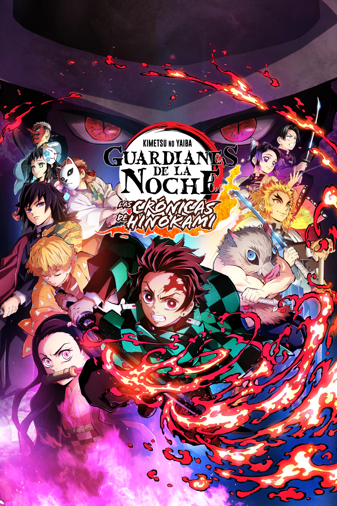

|  |
Tanjirou Kamado es un chico inteligente y de buen corazón que vive con su familia
y gana dinero vendiendo carbón. Todo cambia cuando su familia es atacada y asesinada
por un demonio (oni). Tanjirou y su hermana Nezuko son los únicos sobrevivientes del
incidente, aunque Nezuko fue convertida en demonio. |
 |
La historia se desarrolla en un mundo ficticio en el que la humanidad está al borde de la
extinción a causa de unas criaturas humanoides llamadas «titanes», lo que obliga a los
supervivientes a refugiarse en tres enormes murallas que impiden el acceso a dichos monstruos. |
 |
Estamos en un mundo donde abundan los superhéroes (y los supervillanos). Los mejores humanos
son entrenados en la Academia de Héroes para optimizar sus poderes. Entre la minoría normal,
sin poder alguno, aparece Izuku Midoriya, dispuesto a ser una excepción y formarse en la Academia. |